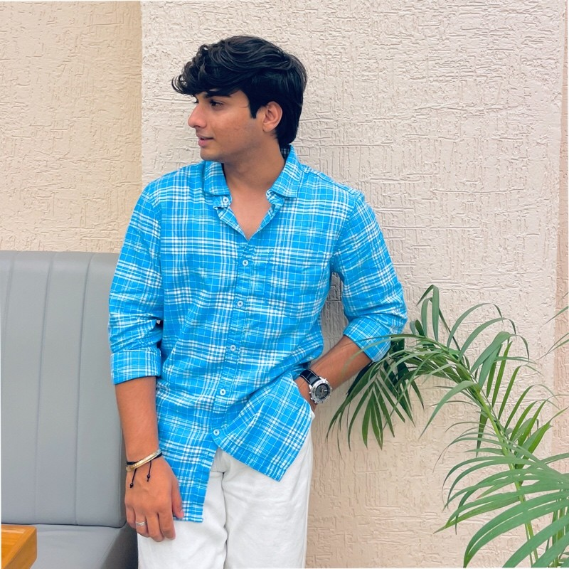

I'm a passionate creative professional who transforms raw footage into compelling visual stories and crafts intuitive user experiences through UI/UX design that captivate, inspire, and engage audiences.

I'm a creative and performance-driven Video Editor & Cinematographer with hands-on experience in producing high-impact promotional videos, podcast content, cinematic reels, corporate videos, and social media campaigns.
Based in Pune, Maharashtra, I specialize in end-to-end video production including concept planning, camera operation, lighting setup, video editing, color grading, sound synchronization, and final delivery. Currently pursuing my PGDM in Finance & Business Analytics while actively freelancing.
Passionate about crafting visually compelling and trend-driven content that combines creativity, editing precision, and strategic execution to maximize engagement and audience growth across YouTube, Instagram Reels, LinkedIn, and digital platforms.
Expert in Adobe Premiere Pro, Final Cut Pro, CapCut. Specializing in short-form content, Instagram Reels, YouTube production, promotional videos, and dynamic captioning.
Professional DSLR & mirrorless camera operation (FujiFilm XT-20, Sony A6700, Nikon D5000, Canon 500D), lighting setup, framing, and on-location cinematography.
Multi-camera editing, audio editing & sound synchronization, mastering, and complete podcast production with professional-grade results.
User-centered design using Figma, creating intuitive interfaces, wireframes, prototypes, and complete design systems for web and mobile applications.
Professional color correction and grading, visual effects, motion graphics, typography animation, and After Effects compositing.
Instagram Reels & Shorts editing, YouTube video production, strategic content planning, and platform optimization for maximum engagement.
Self-Employed
Produced promotional videos, podcast edits, cinematic reels, and short-form social media content for brands and clients. Managed complete video production workflows including shooting, editing, color grading, sound design, and final delivery. Created platform-optimized content for YouTube, Instagram Reels, Shorts, and LinkedIn. Worked with hotels, cafés, corporate clients, and college events.
VML (WPP) • Gurugram
Conducted credit & risk analysis, managed end-to-end lifecycle activities for 50+ job orders in Maconomy ERP. Reconciled over two years of financial records, resolved billing mismatches, and improved data accuracy. Collaborated with finance managers and cross-functional teams for operational efficiency.
Postgraduate Diploma in Management
International School of Business & Media (ISBM) • 2024-2026
Commerce
Mohanlal Sukhadia University (MLSU) • 2021-2024
Data Analysis & Spreadsheet Management
Certified
Business Intelligence & Data Visualization
Certified
Advanced
Advanced
Advanced
Intermediate
Advanced
Intermediate
Advanced
Expert
Creating engaging short-form content inspired by modern social media trends and audience behavior.
Currently pursuing PGDM in Finance & Business Analytics, combining creativity with data-driven insights.
Developing content strategies that maximize audience engagement and platform optimization.
Member of Digital Moment Cell, collaborating on digital initiatives and creative projects.
Interested in working together? Let's have a conversation about your next project.